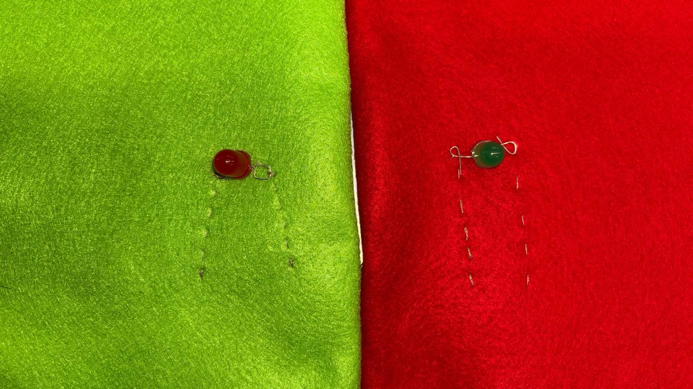
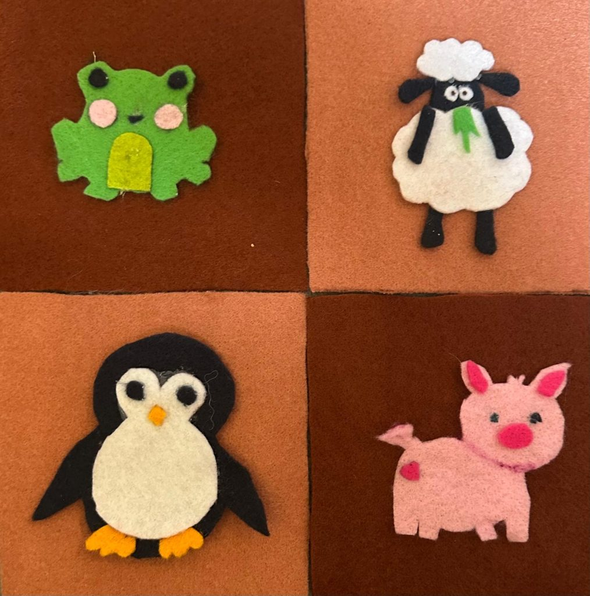

This week’s course themed “Microcontrollers and Soft Circuit Interaction” combined practical projects, user research, and diverse interactive design cases, demonstrating how technology can extend beyond “functionality” to embrace more inclusive, emotional, and creative possibilities. The instructor not only shared her research experience in participatory design and education but also deeply analyzed how sensory dimensions like touch, sound, and material become core components of human-computer interaction.
The course began with the instructor’s experience of conducting co-creation workshops at the Dorset Blind Association and other educational institutions. She emphasized a core shift from “designing for people” to “designing with people”. Especially in projects involving visually impaired individuals, autistic children, and neurodiverse populations, traditional user research models are no longer effective. Designers must truly involve users in the creative process as “collaborators”. Inclusive design is not just about functional usability, but about creating a shared experience field that respects differences.
Through multiple project cases (such as tactile sound synthesizers and textile-sound interactive installations), we have seen the potential of combining “tactile interaction” with “soft circuits”. For example, a young visually impaired user controls sound changes by touching woven yarns, in which conductive yarns, Arduino, and induction modules are woven into the soft circuit. This combination breaks the traditional paradigm of “code-driven hardware”, making the material itself an interactive interface. Handmade fabrics are not only a medium for carrying technology but also a container for conveying stories and identity.
In addition to theories and cases, the course also covered detailed explanations of Arduino’s basic structure and related components (resistors, LEDs, power pins, etc.), making it suitable for beginners at all experience levels. We learned:
- The difference between digital and analog signals;
- The “water flow analogy” to understand resistors;
- How to wire circuits, debug issues, and avoid connection errors.
We also hands-on practiced sewing LEDs onto fabric with conductive thread, merging hardware prototyping with textile craftsmanship.

The instructor frankly shared her experience as an ADHD neurodiversity researcher, pointing out that technology should not start from the perspective of “barriers” but focus on the diversity of individual experiences. In her workshops, participants are not only “using technology” but also “expressing themselves through making”. Even the simplest recording module can carry family memories, sound stories, or life experiences. Good interactive design does not ask “what can technology do”, but “what are people willing to express through technology”.
In the final hands-on task of the course, our group designed an interactive e-textile work with sound feedback: we sewed patterns of small animals (such as frog, sheep, penguin and pig) using different coloured fabrics, and attached them to a large cloth surface. Each animal has a touch sensor embedded behind it, connected to an Arduino controller.

- Pressing the frog plays “croak croak croak”.
- Tapping the sheep triggers a soft “baa—”.
- Touching the penguin emits a short and lively “cheep cheep”.
- Prodding the pig plays “oink” or “oink oink”.
This work integrates three senses: visual (colour and shape recognition), tactile (fabric texture and pressure feedback), and auditory (sound output), allowing users, especially children or those with visual impairments, to interact non-visually. The entire process not only reinforced our understanding of circuits and microcontrollers but also made us think about how technology can serve perceptual diversity and fun education.
Through this course, I deeply realized that “interaction” is more than just interface clicks or sensor responses it’s a perceptual dialogue achieved through materials, senses, and relationships. The combination of microcontrollers and soft circuits provides a prototype platform for this new type of connection among “humans-objects-environments”.